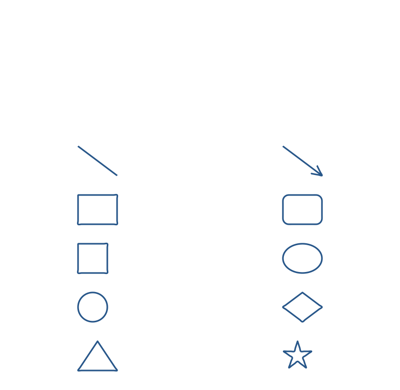

Choose a shape in the Draw tab, then drag on the page. Each shape is an editable ink stroke. Select it to move or resize it, or use Undo stroke to remove it.
The ten shapes are arranged in the same two-column order as the Shapes group.
| Left | Right |
|---|---|
| Line | Arrow |
| Rectangle | Rounded |
| Square | Ellipse |
| Circle | Diamond |
| Triangle | Star |
Next: Handwriting and drawing.
